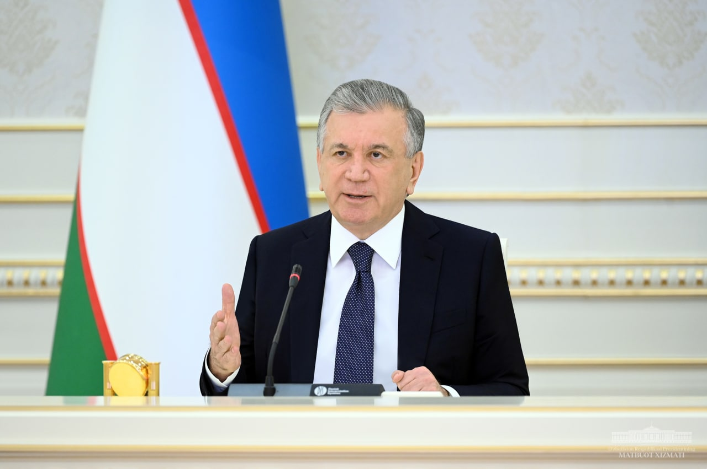
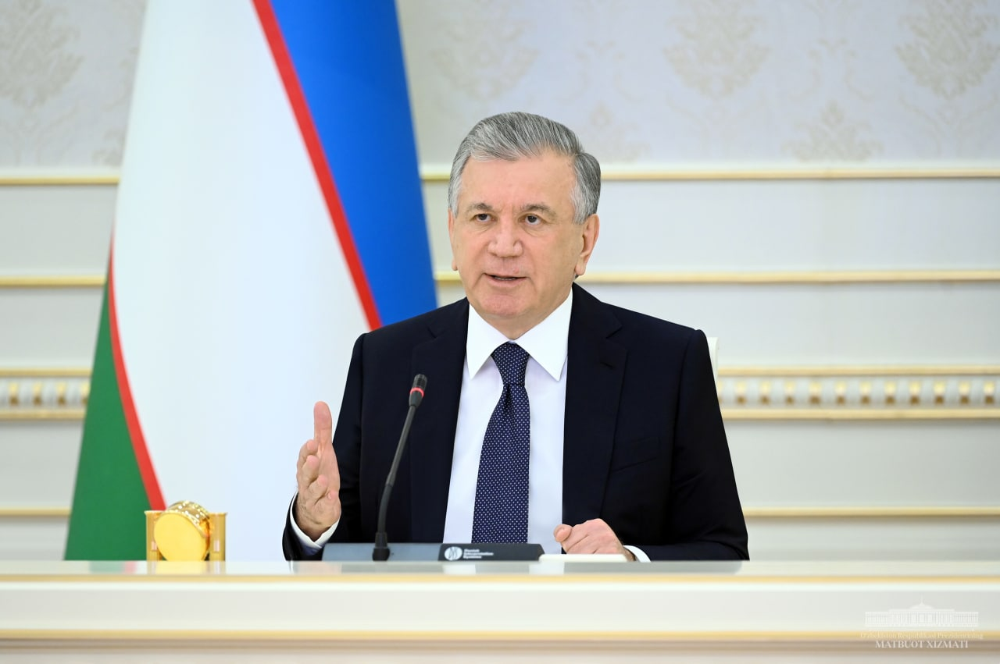

UzbekAbout : Siz bu web saytda
O'zbekiston
haqida ma'lumotga ega bo'lishingiz mumkin!
Oʻzbekiston (rasman: Oʻzbekiston Respublikasi) — Markaziy
Osiyoning markaziy qismida joylashgan mamlakat.
Oʻzbekistonning poytaxti — Toshkent shahri.